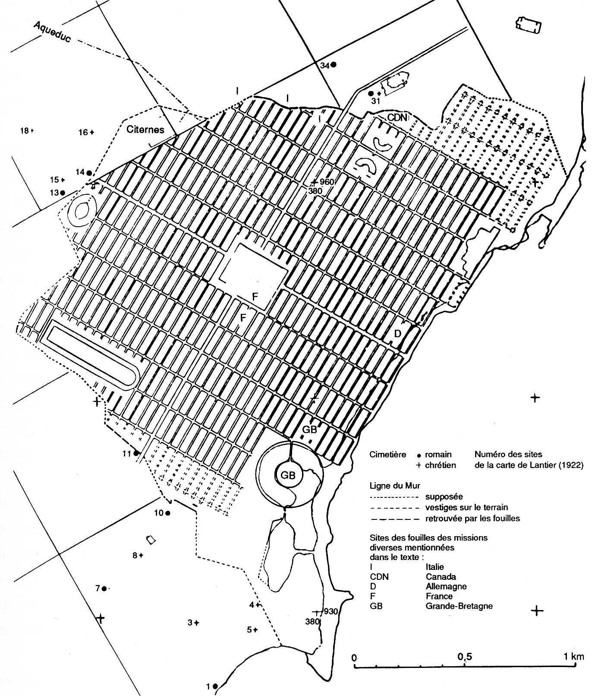
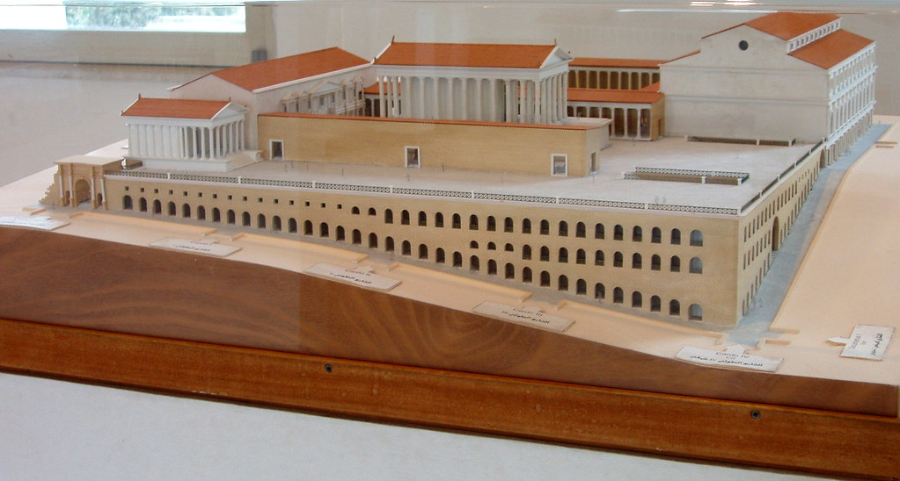
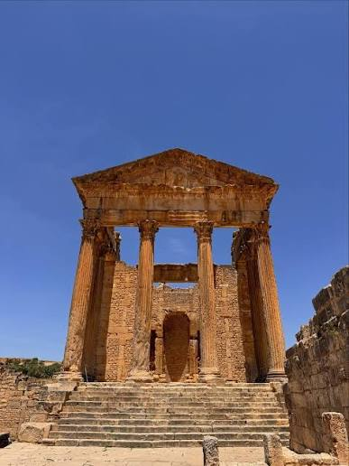
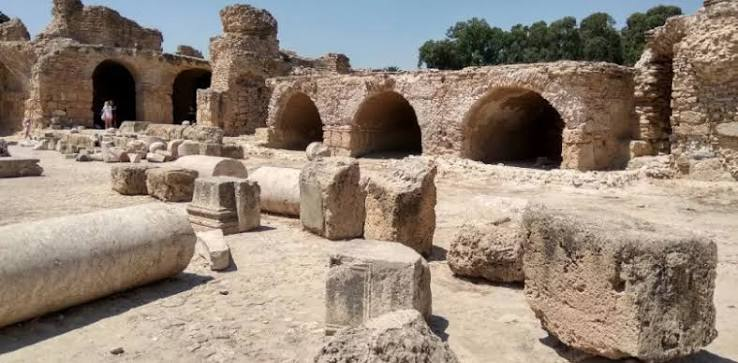
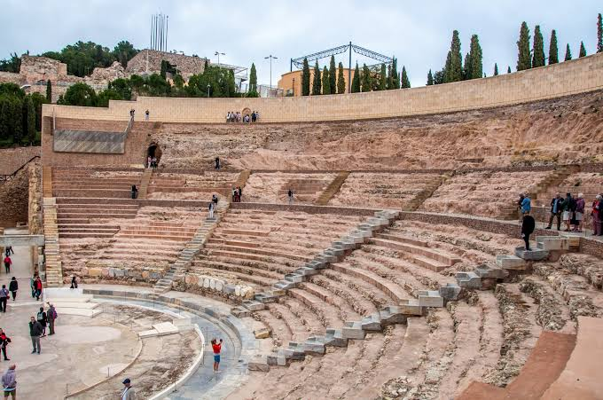
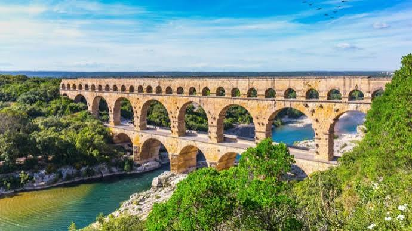

قرطاج وإسهاماتها في الحضارة الرومانية: الازدهار العمراني
مقدمة
بعد سقوط قرطاج سنة 146 ق.م تحولت إلى ولاية رومانية وشهدت ازدهارًا عمرانيًا.
ما مظاهره؟ وما عوامله؟
I مظاهر الازدهار العمراني: خصائص المدينة ومكوناتها
1. خصائص مدينة قرطاج الرومانية
أ. إعادة بناء قرطاج
بعد تخريب قرطاج، عمل الرومان على إعادة بناءها بتكوين مستوطنة رومانية في عهد الإمبراطور أقيانوس سنة 29 ق.م، ثم أصبحت المستوطنة الرومانية عاصمة لولاية أفريقيا البروقنصلية (الولاية الرومانية بإفريقيا).
ب. خصائص المدينة الرومانية
تميزت مدينة قرطاج بتخطيط شطرنجي، تمتد فيها طرقات مستقيمة ومتقاطعة لتشكل مربعات، وكانت الطرقات تمتد من الشمال إلى الجنوب ومن الشرق إلى الغرب.
يمثل التخطيط الشطرنجي ميزة تتميز بها المدن الرومانية.
2. مكونات المدينة
تميزت المدينة الرومانية باحتوائها على كافة العناصر العمرانية الأساسية، من أهمها:
أ. الفوروم
هي ساحة عمومية مهيأة تحتل قلب المدينة الرومانية، وتأوي اجتماعات المواطنين لانتخاب الحكام البلديين، كما تلعب دورًا ثقافيًا.
ب. الكابتلوم
هو معبد الديانة الرسمية للدولة الرومانية، ويؤوي الثالوث الإلهي: يوبتير – ميناورا – يونو.
ج. الأسواق والمحلات التجارية
عادة تتركز قرب الفوروم، وتتركب من فناء فسيح وتوجد حوله المحلات والمتاجر.
د. منشآت الترفيه
تتمثل في المسارح والحمامات وميدان سباق الخيل.
- الحمامات: توجد في كل المدن، مثال حمامات أنطونيوس بقرطاج، وتتكون من غرف باردة وأخرى دافئة وأخرى حارة، وتحتوي قاعات رياضة ومكتبة.
- المسارح: تتنوع إلى مسارح دائرية ونصف دائرية، ويتكون المسرح من 3 عناصر: مدرج نصف دائري أو دائري – فضاء على نفس الشكل – ركح للعرض.
- ميدان سباق الخيل: مثل ميادين سباق الخيول الجارة للعربات، وتوجد خاصة في المدن الكبرى.
هـ. المنشآت المائية
تتكون من الصهاريج والحنايا، وهي سواقي لنقل المياه إلى المدن.
II عوامل الازدهار العمراني
1. اهتمام الأباطرة الرومان
أبدى الأباطرة الرومان اهتمامًا بالبناءات العمومية، حيث دعوا إلى مد الطرقات وبناء الجسور ومد القنوات، مثل الإمبراطور أقيانوس سنة 29 ق.م.
2. تنافس الوجهاء
تنافس الوجهاء في تشييد المعالم والمنشآت العمومية قصد التفاخر والتقرب من السلط الرومانية للحصول على المواطنة الرومانية.
خاتمة
شهدت قرطاج في العهد الروماني ازدهارًا عمرانيًا بفضل اهتمام الأباطرة الرومان وأهمية الموروث البوني.
📖 تعريفات
👤 شخصيات
- الإمبراطور أقيانوس: إمبراطور روماني، في عهده تكوّنت المستوطنة الرومانية بقرطاج سنة 29 ق.م بعد إعادة بناء المدينة، ودعا إلى مدّ الطرقات وبناء الجسور ومدّ القنوات.
🌍 دول ومناطق
- قرطاج: مدينة بونية سقطت سنة 146 ق.م، تحولت بعد ذلك إلى ولاية رومانية، وأصبحت في عهد الإمبراطور أقيانوس مستوطنة رومانية ثم عاصمة لولاية أفريقيا البروقنصلية، وتميزت بازدهار عمراني كبير.
- أفريقيا البروقنصلية: الولاية الرومانية بإفريقيا، أصبحت قرطاج عاصمة لها بعد أن تحولت إلى مستوطنة رومانية في عهد الإمبراطور أقيانوس سنة 29 ق.م.
⚔️ أحداث هامة
- سقوط قرطاج (146 ق.م): التاريخ الذي سقطت فيه قرطاج، وبعده تحولت إلى ولاية رومانية وشهدت ازدهارًا عمرانيًا.
- إعادة بناء قرطاج (29 ق.م): تكوين مستوطنة رومانية بقرطاج في عهد الإمبراطور أقيانوس سنة 29 ق.م، ثم أصبحت عاصمة لولاية أفريقيا البروقنصلية.
📅 سنوات وفترات
- 146 ق.م: تاريخ سقوط قرطاج وتحولها إلى ولاية رومانية.
- 29 ق.م: تكوين مستوطنة رومانية بقرطاج في عهد الإمبراطور أقيانوس.
📌 أخرى
- التخطيط الشطرنجي: تخطيط عمراني تتميز به المدن الرومانية، تمتد فيه طرقات مستقيمة ومتقاطعة لتشكل مربعات، وكانت الطرقات تمتد من الشمال إلى الجنوب ومن الشرق إلى الغرب.
- الفوروم: ساحة عمومية مهيأة تحتل قلب المدينة الرومانية، وتأوي اجتماعات المواطنين لانتخاب الحكام البلديين، كما تلعب دورًا ثقافيًا.
- الكابتلوم: معبد الديانة الرسمية للدولة الرومانية، ويؤوي الثالوث الإلهي: يوبتير – ميناورا – يونو.
- الحمامات: منشآت ترفيهية توجد في كل المدن الرومانية، مثال حمامات أنطونيوس بقرطاج، وتتكون من غرف باردة وأخرى دافئة وأخرى حارة، وتحتوي قاعات رياضة ومكتبة.
- المسارح: منشآت ترفيهية رومانية تتنوع إلى مسارح دائرية ونصف دائرية، ويتكون المسرح من 3 عناصر: مدرج نصف دائري أو دائري – فضاء على نفس الشكل – ركح للعرض.
- ميدان سباق الخيل: منشأة ترفيهية رومانية، مثل ميادين سباق الخيول الجارة للعربات، وتوجد خاصة في المدن الكبرى.
- الصهاريج: منشآت مائية رومانية لتخزين المياه.
- الحنايا: سواقي لنقل المياه إلى المدن الرومانية، وتُعدّ من المنشآت المائية الأساسية.
- المواطنة الرومانية: صفة قانونية كان الوجهاء يتنافسون على الحصول عليها من خلال تشييد المعالم والمنشآت العمومية والتقرب من السلط الرومانية.
🗺️ خرائط ومعطيات مصورة





